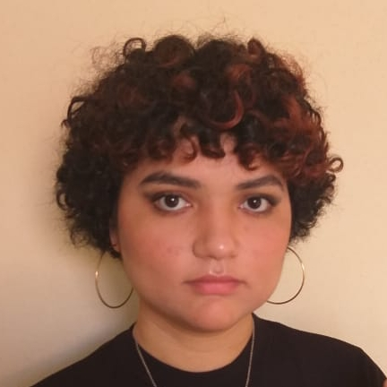
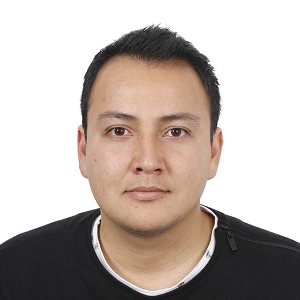

MAS Web Design Studio

Teammates
Savannah Roberts

-
I designed The Beanz Coffee website. The home page displays a bit of info about the coffee shop as well as their mailing address, email and phone number. It also has a link to their menu. Their menu shows the various drinks they have available as well as the prices of each drink. Near the top of the menu page, it allows the customer to go back to the home page.
- BeanzCoffe
Marcela Saenz

-
This is a website made for Out Here Trails Resort. It shows the features and activities the resort offers, as well as their contact information.
Made by: Marcela Saenz
- OutHereTrails
Andres Zambrano

-
I designed The Flex Yoga website. The home page displays a bit of info about the Yoga Studio as well as their mailing address, email and phone number. It also has a link to their yoga classes that shows three different classes that everybody can take such as Gentle Hatha, Vinyasa, and Restorative yoga.
- FlexYoga